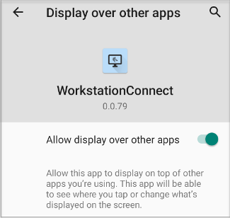
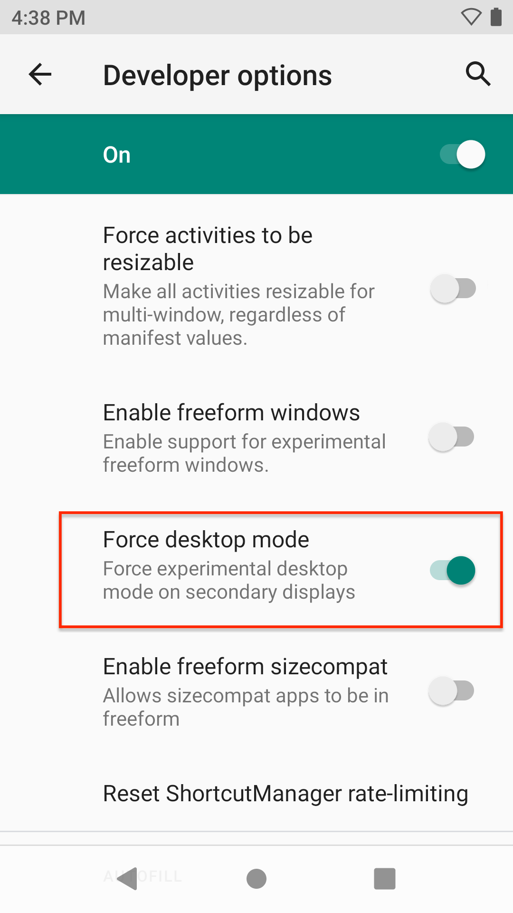
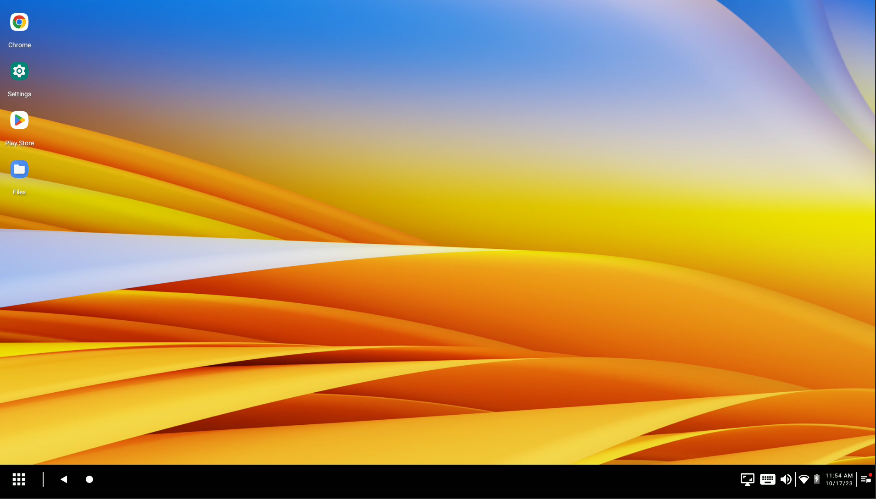
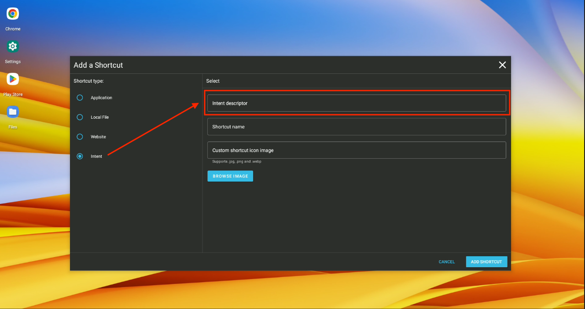

Overview
Zebra Workstation Connect requires a supported Zebra device with the appropriate Zebra OS package docked in a Zebra Workstation Docking Cradle. To experience the full solution, install the Zebra Workstation Connect app v1.0 (or later).
Requirements
Supported Zebra device(s) running Android 11 (or later)
The latest Android 11 OS package deployed to supported Zebra device(s)
The Zebra Workstation Connect app v1.0 (or later), available from the Zebra Suport Portal †
TC5X Workstation Docking Cradle Kit (
CRD-TC5X-1SWS-01*)
Kit includes:- Cradle with HDMI, Ethernet and four (4) USB Ports (
CRD-TC5X-1SWS1-11) - Power supply 100-240vac, 12vdc, 4.16a, 50w (
PWR-BGA12V50W0WW) - DC cable (
CBL-DC-388A1-11) - Does NOT include: country-specific AC line cord (sold separately)
* ZWC also supports
CRD-ET5X-1SCOM2RandCRD-ET5X-1SCOM1cradles- Cradle with HDMI, Ethernet and four (4) USB Ports (
Supported Devices
ZWC is supported only on select Zebra devices.
Get Zebra Workstation Connect from:
Manual Installation
Use this process to set up individual or small groups of devices by copying files directly to device(s). This process requires a device with the latest Zebra Android 11 OS package installed. If necessary, use StageNow to Perform an OS Update on device(s), then return here to proceed.
To install the ZWC solution (prior to docking for the first time):
1. If installing from Google Play:
Visit Google Play (link above) and install Zebra Workstation Connect onto target device(s).
THEN SKIP TO STEP 5.
Some versions are NOT available on Google Play.
2. If installing from the Zebra Support Portal:
Prepare device for copying files directly from a PC by enabling developer options and USB debugging in the device Settings panel.
3. Download (link above) and push the Zebra Workstation Connect app (com.zebra.workstationconnect.release) onto target device(s) using adb or a similar means.
4. On the device, navigate to com.zebra.workstationconnect.release and install the app.
5. After the ZWC app is installed, long-press its icon on the device screen.
Alternatively, go to Settings > Apps & notifications > SEE ALL APPS > WorkstationConnect > Advanced > Display over other apps.
A screen appears similar to the one shown below:

6. Enable the "Display over other apps" option (it might be necessary to scroll down).
When finished, exit that panel but stay in Settings for the next step.
7. In the Developer options panel, enable Desktop Mode:
Settings > System > Advanced > Developer options > (scroll down to) Enable desktop mode

IMPORTANT NOTES:
- Some mobile-device apps configured with a fixed window size can impose limits when organizing multiple apps running on the desktop. Select the option to Force activities to be resizable (shown above) to help alleviate this issue.
- Some apps, including the Android Camera app, do not support resizable windows and might behave unexpectedly if their activities are forced to be resizable.
- Always test apps thoroughly before deployment to production environments after changing this setting.
Installation complete; the device presents Desktop Mode whenever it's docked.
After Installation
When first inserted into a Workstation Docking Cradle that's connected to an external monitor, a device configured as above displays the Zebra Workstation Connect default Desktop similar to the image below. The device screen allows the user to launch and run applications as usual.

Click to enlarge; ESC to exit.
After the device user or an administrator configures app shortcuts and other preferences for a device, those settings are restored whenever that device is placed in a Workstation Docking Cradle.
For help setting up Desktop Mode, see the Workstation Connect User Guide (pdf)
Also see important Usage Notes.
Automated Installation
The Zebra Workstation Connect solution can be installed and configured remotely using Zebra StageNow and through most commercially available Enterprise Mobility Management (EMM) systems.
For StageNow and EMM instructions, see the Workstation Connect Administrator's Guide.
Development Best Practices
When developing apps for use with the Zebra Workstation Connect solution, the following techniques and resources might be useful in some situations.
Add Intent Shortcut

Click image to enlarge; ESC to exit.
Workstation Connect allows the execution of intents from the Desktop by adding them as a shortcut. In the "Add a Shortcut" panel (above), paste the intent string into the "Intent descriptor" field, complete the other fields and click the "ADD SHORTCUT" button to save. The sample descriptor below launches Microsoft Edge.
intent://google.com/search?q=google#Intent;scheme=https;launchFlags=0x4000000;component=com.microsoft.emmx/com.microsoft.ruby.Main;S.com.android.browser.application_id=com.microsoft.emmx;end
Disable Chrome Pull-to-Refresh
When using a mouse to scroll a web page in Chrome, the page sometimes refreshes unexpectedly, which can cause interruptions in the work flow. This behavior is related Chrome's pull-to-refresh feature, which is enabled by default on the mobile version.
This behavior can be overridden by adding the following CSS line to the <body> of the offending web app(s):
<body>
...
{ /* Disables pull-to-refresh but allows overscroll glow effects. */ overscroll-behavior-y: contain; }
...
</body>
Disable Screenshots
Many apps require the display of personal or sensitive information on the screen. Capturing a screen image, a capability built into every Android device and enabled by default, could allow this information to be compromised. To help prevent this security threat, disable the screen capture feature on devices that could be used to display sensitive information. Use the process below to ensure proper ZWC operation.
To disable screenshots without impacting Workstation Connect operations:
- Create a configuration Profile (e.g. with Zebra StageNow) using MX Display Manager.
- Configure Display Manager's "ScreenShotUsage" parameter to disable screenshots.
- Generate barcode(s),
.binfile(s) or other configuration output and deploy to device(s).
NOTE: The screenshot feature remains disabled on the device until setting is reversed by similar means.
Disabling screen capture by means other than that described above (e.g. using an EMM's own method) might cause unwanted Workstation Connect behavior.
See Administrative/EMM section of the Usage Notes for more information.
Protect Password Input
When designing a password input field, it's best to set the field type as "textPassword" so that the plain text of the password as it's being entered is displayed as discreet characters such as asterisks or bullets.
Zebra recommends masking the user password in this way as a measure of security, particularly if the password field could appear on the secondary screen, which is sometimes visible to others. For more information, please refer to the relevant Android community docs.
Camera Usage on Secondary Screen
For apps that use the device camera, it is possible to present a window on the secondary screen to preview and/or capture camera images. Please refer to the Android development community pages linked below for more information.
- Camera2 APIs | Low-level controls for all camera use cases
- CameraX Jetpack | Google library intended to simplify camera app development
Query External Monitor
To programmatically query the secondary display ID:
DisplayManager dm = (DisplayManager) getSystemService(Context.DISPLAY_SERVICE);
Display[] displays = dm.getDisplays();
for (Display display : displays) {
String name = display.getName();
if (name.startsWith("DisplayLink") || name.startsWith("HDMI Screen")) {
return display.getDisplayId();
}
}
To determine which display an app is running on:
mDisp = mContext.getDisplay();
if (mDisp != null) mCurrentDisplayId = mDisp.getDisplayId();
To get a list of available displays (including the one an app is running on):
mDisplayManager = (DisplayManager)mContext.getSystemService(Context.DISPLAY_SERVICE);
displays = mDisplayManager.getDisplays();
To launch an app on a specific display:
Intent intent = mContext.getPackageManager().getLaunchIntentForPackage(targetApp);
ActivityOptions options = ActivityOptions.makeBasic();
options.setLaunchDisplayId(launchId);
Bundle bdl = options.toBundle();
intent.addFlags(Intent.FLAG_ACTIVITY_LAUNCH_ADJACENT | Intent.FLAG_ACTIVITY_NEW_TASK);
mContext.startActivity(intent,bdl);
Multi-window Apps
To build an app to be multi-window ready, set the following manifest flag:
<application
android:resizeableActivity="true">
</application>
Learn more about building multi-window apps:
- Multi-window support
- Launch an app on the secondary display
- Preserve app state when moving between displays
Apps that are built as non-resizable exhibit specific behaviors when launching on the Desktop and moving from the device to the Desktop. Learn more.
Refresh Handling
When moving an app from the device to the Desktop, app refresh-related visual anomalies can sometimes occur. Adjustments to the android:configChanges attribute might provide a remedy. Before using, Zebra recommends learning more about how to handle configuration changes and about the activity element.
Google recommends using this attribute with extreme caution.
Presentation Class
The Presentation class allows an app to show content on a secondary display. When developing or working with apps that will display content on an external monitor, it might be helpful to understand this class and its related Context, Display, and Router classes.
Learn more about the Presentation class.
Starting Tasks
For apps containing multiple activities, Zebra recommends following Android developer guidance for starting a new task.
Monitor Docking
To monitor the docking status of a device programmatically, refer to this Android guide to determine the docking state and type.
The dock-state details are added as an extra parameter in the sticky broadcast of the ACTION_DOCK_EVENT intent action. As ACTION_DOCK_EVENT is a sticky broadcast, the registerReceiver() method should be called with the instance of the broadcast receiver to get the onReceive call events and use the intent extra to determine whether the device is docked or undocked.
Register the DOCK intent:
IntentFilter dockFilter = new IntentFilter(EXTRA_DOCK_STATE);
dockFilter.addAction(ACTION_DOCK_EVENT);
registerReceiver(new DockReceiver(), dockFilter);
Call the registerReceiver() method:
private final class DockReceiver extends BroadcastReceiver{
@Override
public void onReceive(Context context, Intent intent) {
int dockState = intent.getIntExtra(Intent.EXTRA_DOCK_STATE,Intent.EXTRA_DOCK_STATE_UNDOCKED);
if (dockState == 1) {
// we are now in 'dock'
// place your code here
}else if(dockState == 0){
// we are now in 'undock'
// place your code here
}
}
}
Optimize App for Display
For the best user experience, an app's UI should adapt to the screen it's being displayed on. The code below shows how to modify an app to adjust its UI layout based on the screen it's currently running on.
Add this line to the app's manifest:
android:configChanges="orientation|keyboardHidden|screenSize|smallestScreenSize|screenLayout|density|uiMode"
Add three Java snippets to the app:
Detect changes to the device configuration
@Override
public void onConfigurationChanged(@NonNull Configuration newConfig) {
super.onConfigurationChanged(newConfig);
/* Handling the movement of the application between displays */
showUiLayout();
}
Method to show the layout
private void showUiLayout() {
/* Get the display ID of where the app is running */
displayId = getDisplayId();
if (displayId == 0) {
/* Primary screen - set the device-side layout */
setContentView(R.layout.activity_main);
} else {
/* Desktop screen - set the desktop-side layout */
/* This may happen for other displays such as remote view */
setContentView(R.layout.activity_second);
}
}
Method to get the display ID
private int getDisplayId() {
Display mDisp = this.getDisplay();
if (mDisp != null) displayId = mDisp.getDisplayId();
return displayId;
}
Also See
For more information about ZWC setup, administration, features and usage, please refer to the following guides:
- Workstation Connect Administrator's Guide (pdf) | Setting up users, installing/removing apps and shortcuts, configuring access to apps and USB-based storage
- Workstation Connect Installation Guide (pdf) | Installing the ZWC solution manually, or using Zebra StageNow or an EMM system
- Workstation Connect User Guide (pdf) | Desktop Mode set-up and usage
- Usage Notes | Behaviors and restrictions of the Zebra Workstation Connect solution
- FAQ | Frequently asked questions about ZWC
- Streamlining Workstation Connect Configuration | A Step-by-Step Guide for Developers